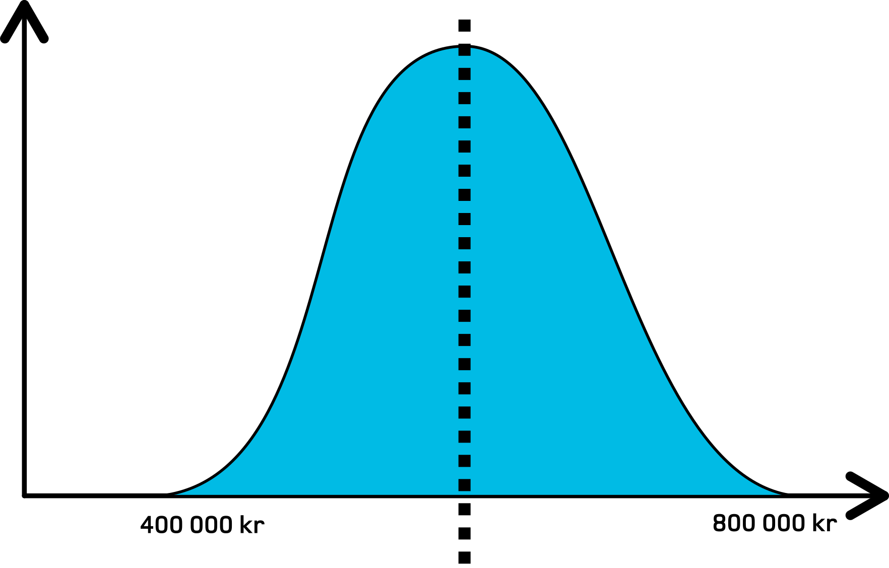
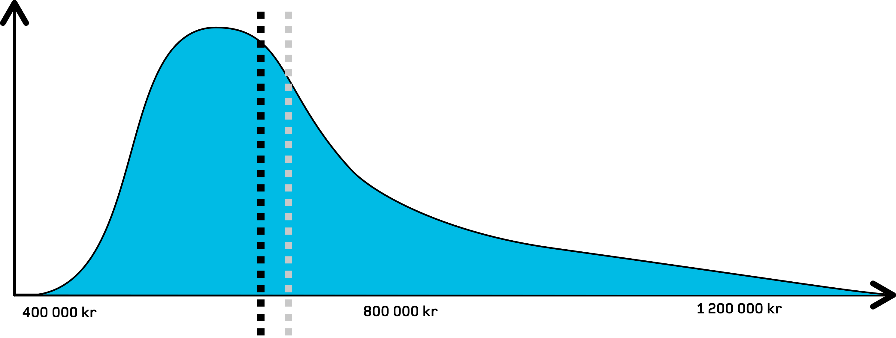

Lønnsstatistikken 2020
Privat sektor
Svarprosent: 61,2 %
- Utsatte lønnsforhandlinger
- Manglende lønnsjustering
- Innlogging kreves
- Sikkerhet
- Datakvalitet
- Funksjonalitet
Median og gjennomsnitt
500 000 kr
580 000 kr
610 000 kr
620 000 kr
630 000 kr
700 000 kr
1 900 000 kr
Median:620 000 kr
Gjennomsnitt: 791 429 kr
Normalfordelt
Virkeligheten (illustrert)
Fordelingen i lønnsstatistikken
Lønnskalkulator
Utdanning og arbeidserfaring
Lønn etter sektor
Kjønn
Regionale forskjeller
Takk!